Versionamento de edições
| Data | autor | Descrição | Versão |
|---|---|---|---|
| 26/03/2019 | William Elias Alves | Inserção do texto base | 0.1 |
| 30/03/2019 | William Elias Alves | Adição dos modelos de argumentações | 0.2 |
| 03/04/2019 | William Elias Alves | Inserção do conteúdo no mkdocs | 0.3 |
| 08/04/2019 | William Elias Alves | Inserção da tababela de versionamento | 0.4 |
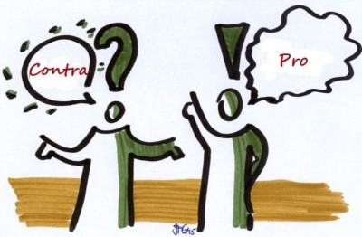 fonte: https://baudelivrosonline.files.wordpress.com/2016/07/argumento.jpg?w=676
Definição
A argumentação é um processo no qual há a manipulação de pensamentos de forma organizada tendo como finalidade chegar a uma conclusão sobre dado assunto.
Dentro da disciplina de Engenharia de requisitos os principais modelos e frameworks para se construir uma Argumentação são:
- Modelo de Toulmin
- Framework IBIS
- Framework de Dung
- Framework ACE
O modelo adotado para a representação da argumentação da plataforma MEDIUM foi o ACE.
Argumentações desenvolvidas
Argumentação 1 - Aspectos gerais
Proposições
- p1: O MEDIUM apresenta uma interface intuitiva de um site de notícias com uma comunidade ativa
- p2: O usuário dificilmente se sentirá perdido em suas buscas
- p3: O escritor se sente motivado a publicar seus textos na plataforma
- p4: Mesmo com uma comunidade ativa, a plataforma não é tão conhecida por usuário comuns
- p5: Uma plataforma de publicação não é responsável exclusiva por motivar um escritor a publicar seus textos
- p6: Essa facilidade na busca por conteúdos é um ponto de vantagem na usabilidade geral da plataforma
Rascunho:
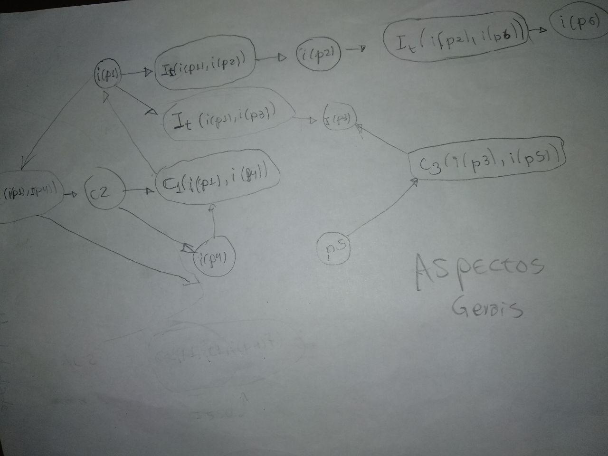
Esquemático (Versão 2)
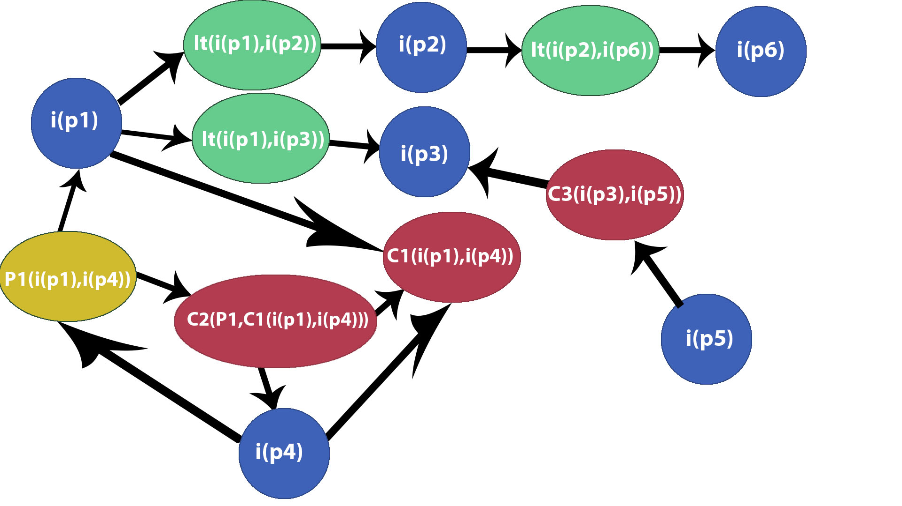
Esquemático (Versão 3): 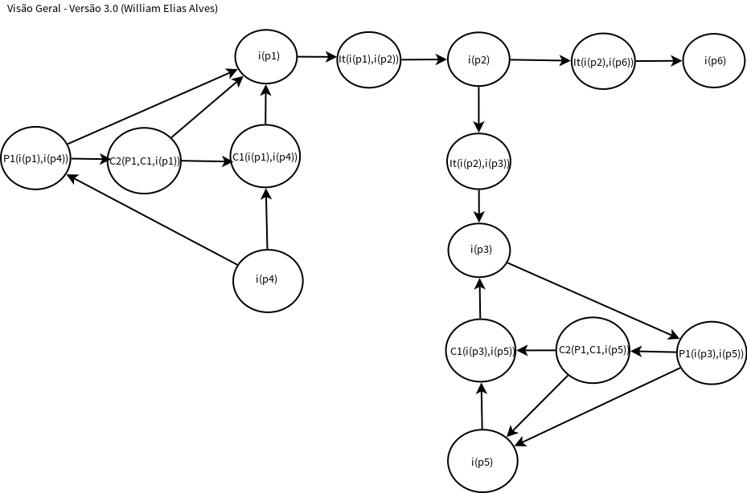
Argumentação 2 - Público-alvo
Proposições
- p1: As publicações do MEDIUM possuem um teor majoritariamente sério.
- p2: A plataforma é procurada por leitores de assuntos técnicos
- p3: O público-alvo de leitores é mais específico
- p4: A faixa etária dos leitores, em suma, é de jovens-adultos
- p5: O grau de escolaridade dos usuários/leitores é, em grande parte, de nível superior
- p6: A utilização do MEDIUM no Brasil ainda é pouco difundida, tendo menos adeptos do que em países desenvolvidos, pois a massa com grau de escolaridade superior é minoritária, por volta de 15% da população.(Dados:PNAD-IBGE 2017 - biblioteca ibge)
Rascunho:
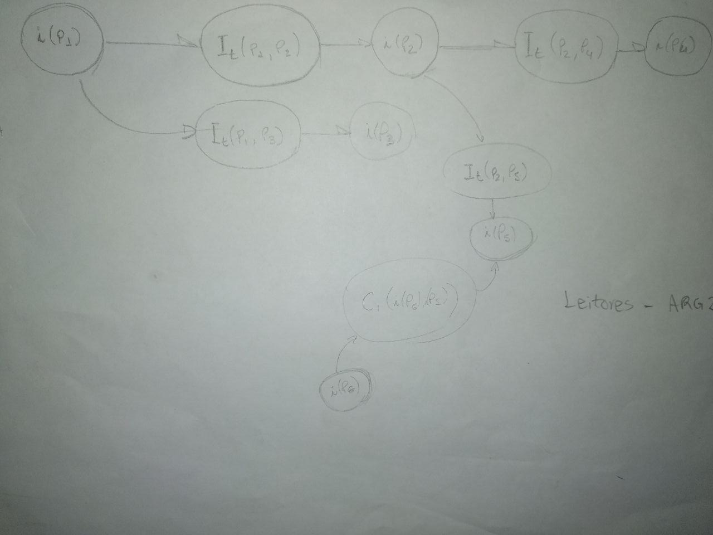
Esquemático (Versão 2): 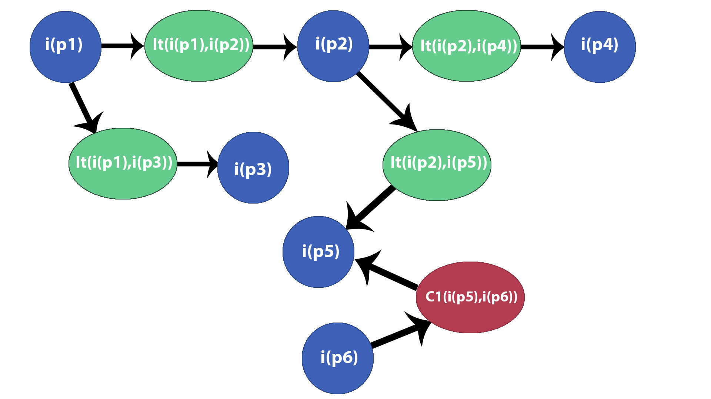
Esquemático (Versão 3): 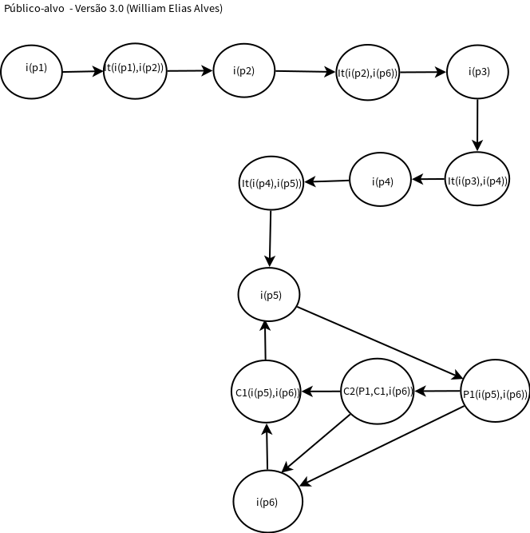
Argumentação 3 - Conteúdo
Proposições
- p1: A plataforma sugere artigos com base em suas leituras
- p2: Essas podem gerar uma bolha de conteúdo, para o usuário leitor
- p3: Essa bolha de conteúdo podem impedir o leitor de explorar outros e novos assuntos
- p4: Os criadores da plataforma tiveram uma preocupação em deixar o leitor em um ambiente confortável por meio de sugestões de conteúdo
- p5: Por conta do ambiente familiar, gera-se uma maior recorrência e fidelidade do leitor para com o site
Rascunho

Esquemático (versão 2):
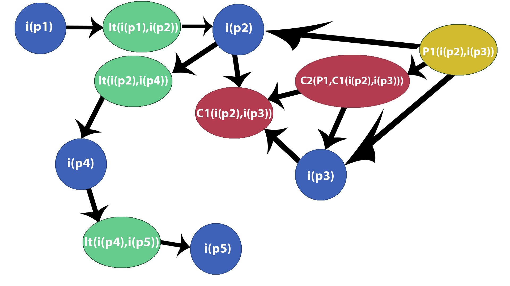
Esquemático (versão 3): 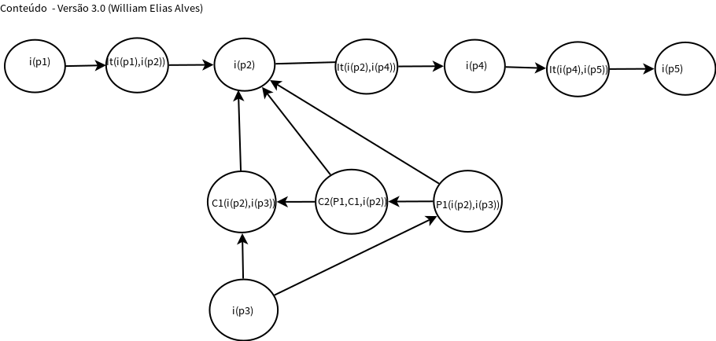
Argumentação 4 - Forma de publicação
Proposições
- p1 O escritor pode criar um blog dentro da plataforma do Medium.
- p2 O Blog possui muitas vantagens para o escritor.
- p3 O escritor pode ter um domínio próprio no site.
- p4 Publicações avulsas geram menos trabalho ao escritor.
- p5 Outros escritores podem publicar artigos num mesmo domínio.
- p6 Gera uma comunidade saudável de escritores.
- p7 Uma comunidade de escritores gera competitividade e menos reconhecimento individual.
Rascunho
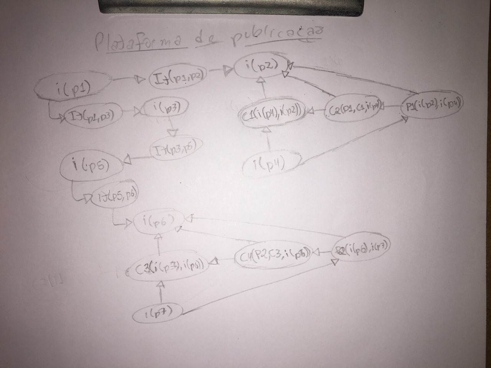
Esquemático (versão 2):
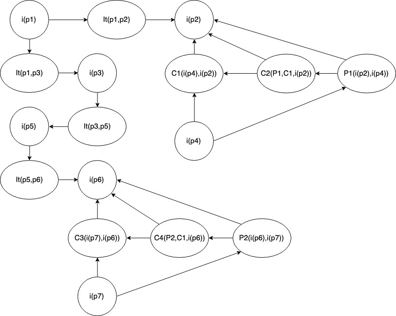